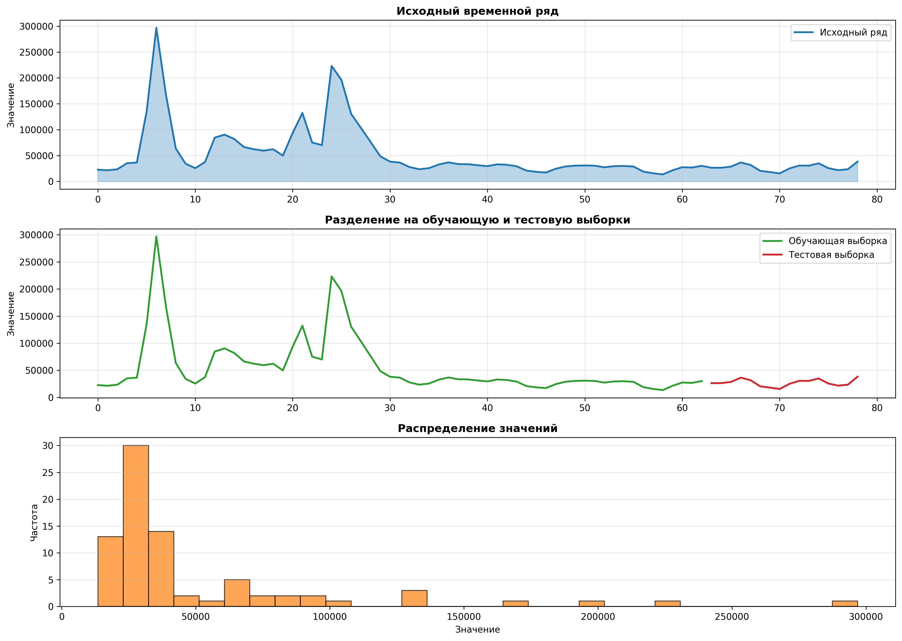
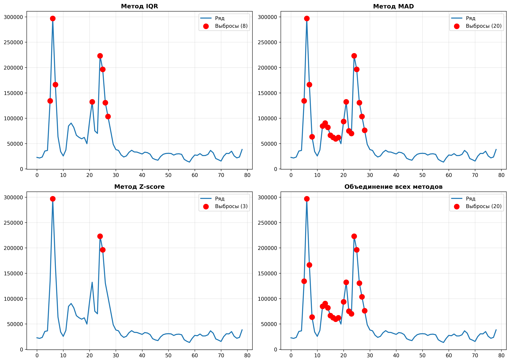
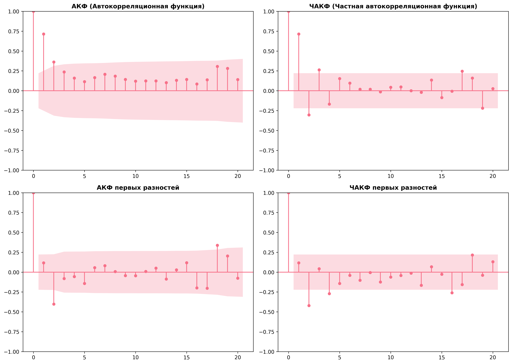
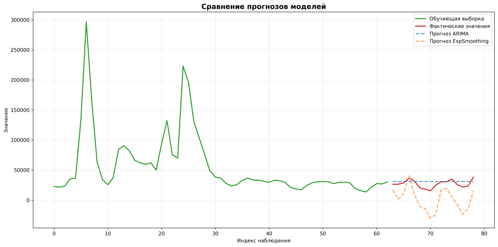
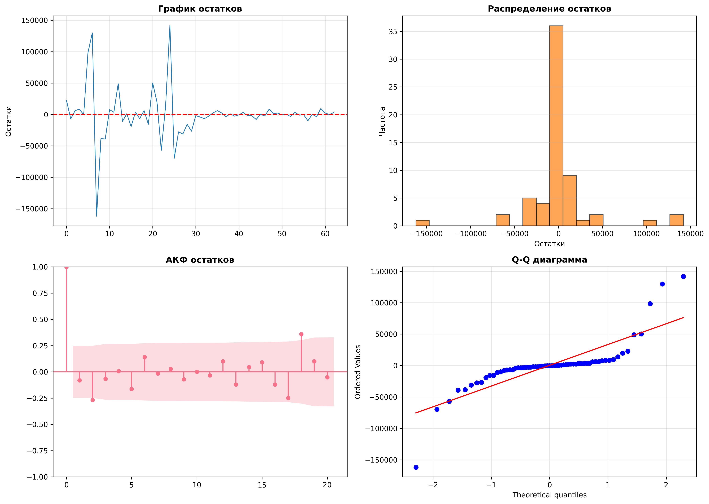
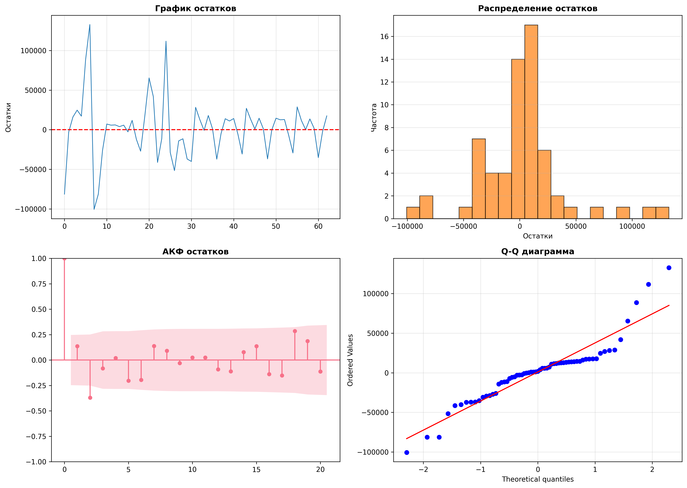

РАСЧЕТНО-ГРАФИЧЕСКАЯ РАБОТА
Анализ временных рядов
Количество наблюдений: 79
Минимум: 13484.0000 | Максимум: 296838.0000
Среднее: 50006.2785 | Стд. откл.: 49051.4738
1. Визуализация временного ряда

2. Анализ выбросов

IQR: 8 выбросов | MAD: 20 выбросов | Z-score: 3 выбросов
3. Коррелограммы (АКФ и ЧАКФ)

4. Прогнозы моделей

5. Метрики качества моделей
| Модель |
MAE |
RMSE |
MAPE (%) |
| ARIMA |
6034.5242 |
7329.9257 |
0.2706 |
| ExpSmoothing |
26875.5868 |
29959.0077 |
1.1372 |
6. Анализ остатков
Модель ARIMA

Модель ExpSmoothing

🏆 ЛУЧШАЯ МОДЕЛЬ
ARIMA с MAE = 6034.5242
7. Выводы
На основе проведенного анализа:
- Выполнена визуализация и анализ выбросов в данных
- Построены коррелограммы для выявления автокорреляции
- Обучены две модели прогнозирования
- Оценена качество каждой модели
- Проведен анализ остатков